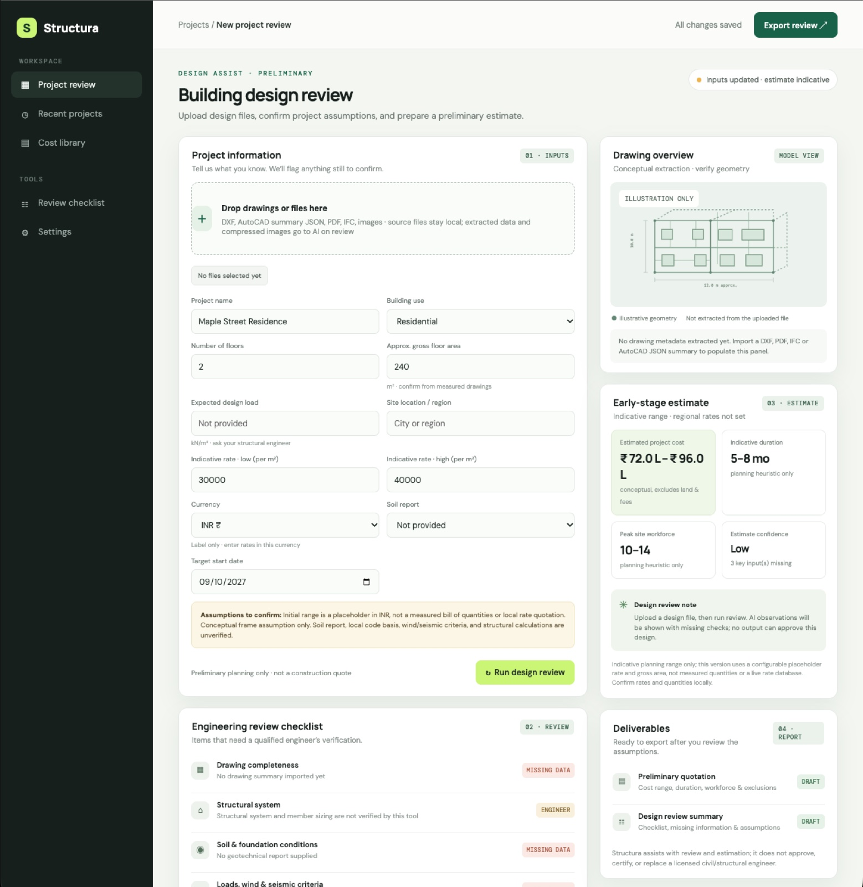
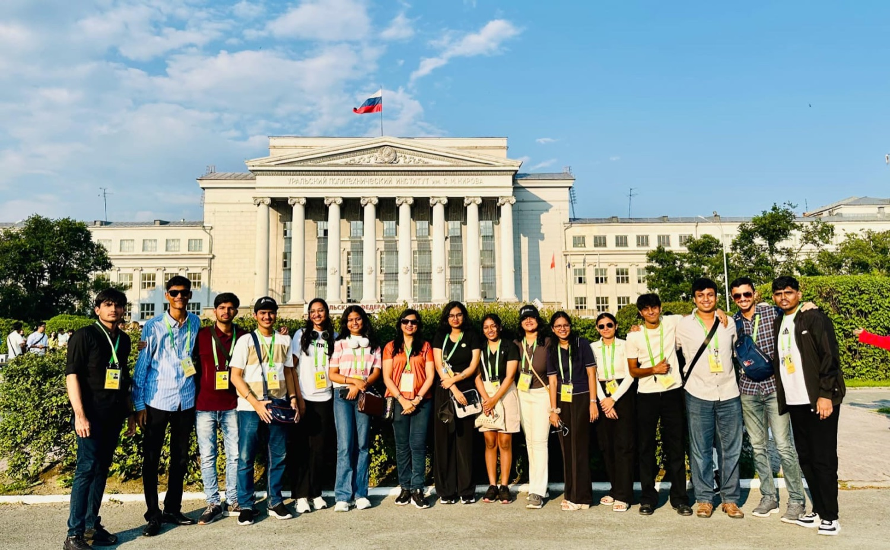
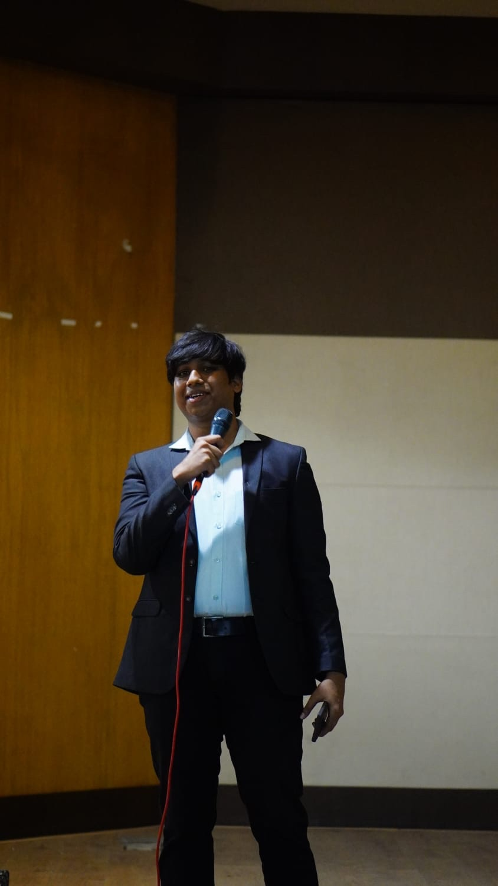
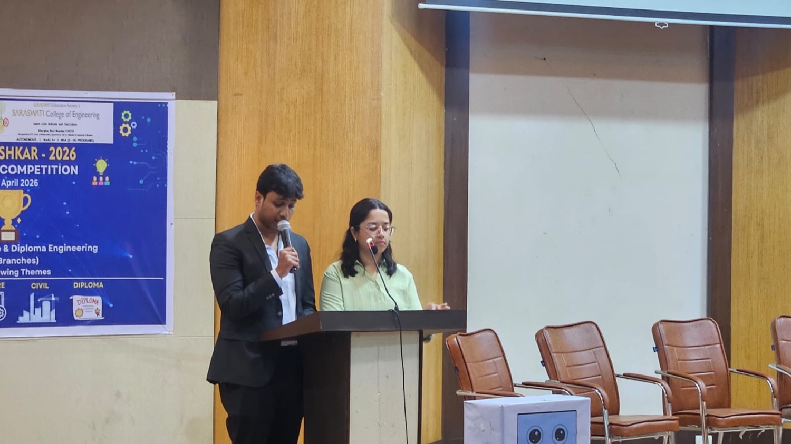
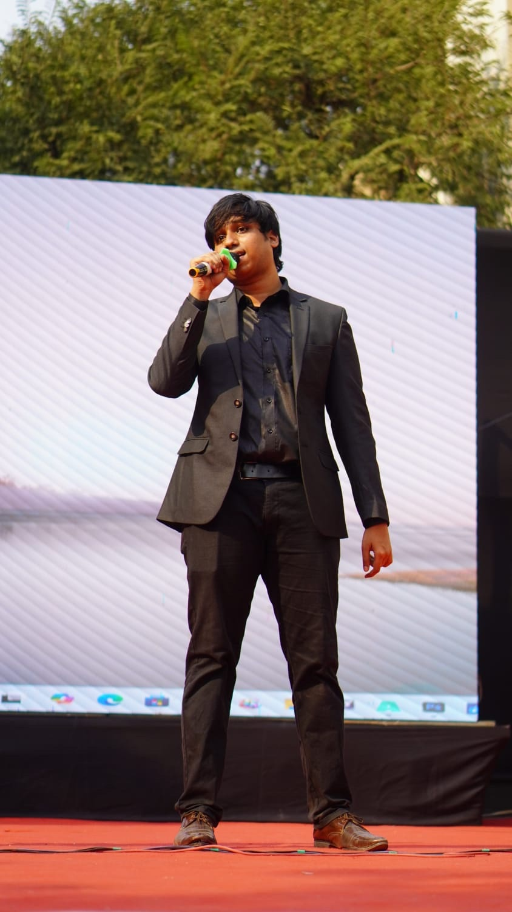

BUSINESS INTELLIGENCE · 01
Nexua AI
An AI-enabled BI workspace that reads a business dataset, maps its columns, and brings analytics and decision support into one place.
AI/ML STUDENT · DATA SCIENCE · PRODUCT BUILDING
I'm Uddhavchandra, an AI/ML student and data science learner who enjoys turning messy, real-world problems into useful software.
SELECTED WORK 2025—26
A few practical tools I've designed and built across business intelligence, education, and early-stage design review.
BUSINESS INTELLIGENCE · 01
An AI-enabled BI workspace that reads a business dataset, maps its columns, and brings analytics and decision support into one place.
EDTECH · OCR / NLP · 02
A Streamlit tool that extracts answers with OCR, compares them with reference responses using keyword and TF-IDF similarity, and summarizes class performance.

BUILT ENVIRONMENT · 03
A building design review workspace for project assumptions, engineering checks, and early cost and duration estimates. Its outputs are preliminary and need qualified review.
↗ Screenshots follow each project's workflow. Use the arrows or thumbnails to browse; open any image full size.
A LITTLE ABOUT ME 02
I like the full path from understanding a problem to putting a tool in someone's hands. I have independently taken a business AI solution through requirements, design, implementation, testing, and deployment.
Alongside my engineering studies, I'm pursuing data science at IIT Madras and building a stronger foundation in machine learning, analytics, and practical software.
More about my journey ↗Find the repetitive task, the missing signal, or the part people need help deciding.
Bring data, AI, and a straightforward interface together around the real job to be done.
Connect the solution to the way people work, then keep improving from what I learn.
EXPERIENCE & LEARNING 03
A growing mix of hands-on work, engineering study, data science, and learning beyond the classroom.
EXPERIENCE
AI SOLUTIONS DEVELOPER · LASYA ENTERPRISES
Designed, developed, tested, and deployed an AI-powered system for business operations. The project letters report less repetitive manual work and improved operational efficiency.
REQUIREMENTS → DEPLOYMENTSTUDENT COUNCIL · SARASWATI COLLEGE OF ENGINEERING
Led the Orator Club and contributed to student-council initiatives during the 2024–25 term.
EDUCATION
ONGOING · DATA SCIENCE
BS in Data Science programme
ENGINEERING · AI & MACHINE LEARNING
B.E. in Artificial Intelligence and Machine Learning
JULY 2026 · YEKATERINBURG, RUSSIA
Summer University participantUral Federal University · 6–19 July 2026
TOOLS I WORK WITH
My toolkit is growing as I take on new problems.
Python JavaScript R
scikit-learn NLP TF-IDF forecasting segmentation
pandas NumPy statsmodels Matplotlib Chart.js
FastAPI Streamlit Tesseract OpenCV Git
COURSES & CERTIFICATES
Course records and verification links for my AI, machine learning, and data science studies.
ACADEMIC & PROJECT RECORDS
Selected supporting documents from study and applied project work.
BEYOND THE SCREEN 04
A few moments from student leadership, speaking, and the Summer University programme in Russia.




NEXT UP 05
I'm looking for an AI/ML internship where I can learn from a strong team and help solve practical problems.
Email me